Terminalerne: opsætning og fejlfinding
Du har fået en terminal og denne guide. Læs guiden igennem én gang, så kan du betjene terminalen selv, uanset om du står i baren, i garderoben eller ved indgangen. Knapper er skrevet, som de hedder på skærmen, fx Betal.
Login til terminalerne
Udfyldes af lederen på dagen. Bruges kun, hvis terminalen er logget ud.
Scan indgangens QR-kode i RF Scanner.
sættes ind af lederen
Start herFind din opgave
Læs "Kom i gang" først. Læs derefter afsnittet for det sted, du står. Går noget galt, slår du op under "Hvis noget går galt". Har en gæst brug for hjælp, som du ikke kan give, sender du gæsten til garderoben.
AlleKom i gang
- Tænd terminalen med tænd/sluk-knappen i toppen.
- Tjek, at der er strøm nok på terminalen. Batteriet vises øverst på skærmen.
- Find ud af, hvor laderen er, så du kan lade op i løbet af din vagt.
- Find din app på forsiden, og tryk på den.


Terminalen er normalt logget ind og klar, når du får den. Så kan du gå direkte til afsnittet for det sted, du står.
AlleHvis terminalen er logget ud
Er terminalen logget ud, logger du selv ind igen. Oplysningerne står i boksen forrest i den printede guide. Mangler de, får du dem af din leder.
Festhallen POS, baren og garderoben
- Indtast eventets brugernavn og adgangskode. Brugernavnet kan være en e-mail.
- Viser appen "Vælg terminal", vælger du den terminal, du står ved, fx Terminal 1. Valget bliver gemt.
Viser terminalen "Sessionen er udløbet", skriver du adgangskoden igen og trykker på Fortsæt. Kurven og gæsten bliver stående.
Kun lederen kan skifte terminal bagefter. Det sker under Indstillinger og Terminal.
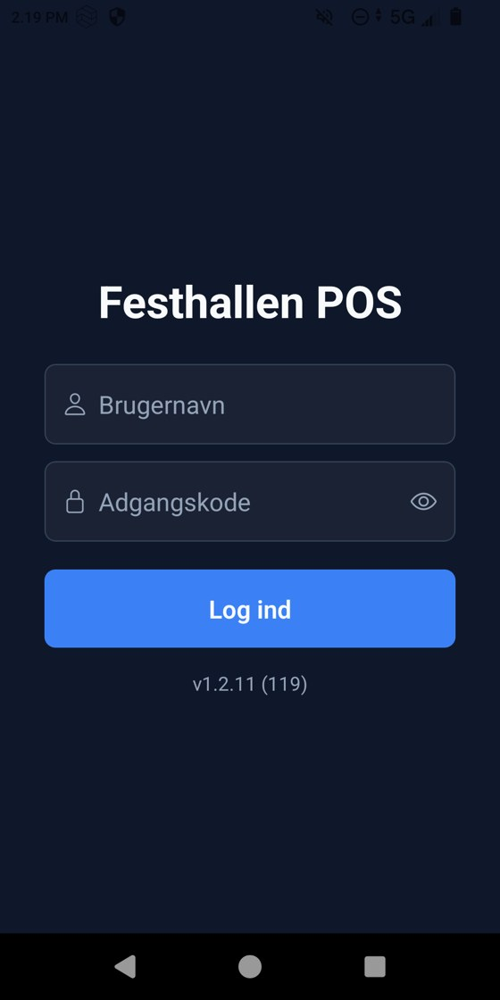
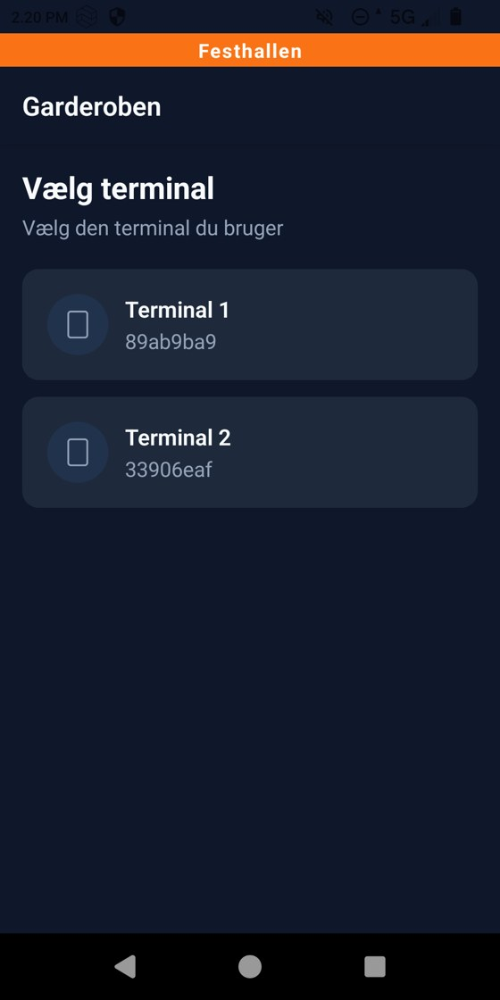
RF Scanner, indgangen
- Viser appen "PAR SCANNER", scanner du indgangens QR-kode med kameraet. Den sidder på din printede guide. Mangler den, får du den af din leder.
- Terminalen er nu klar. Tryk på KLAR TIL AT SCANNE.
BarenSælg og tag betaling
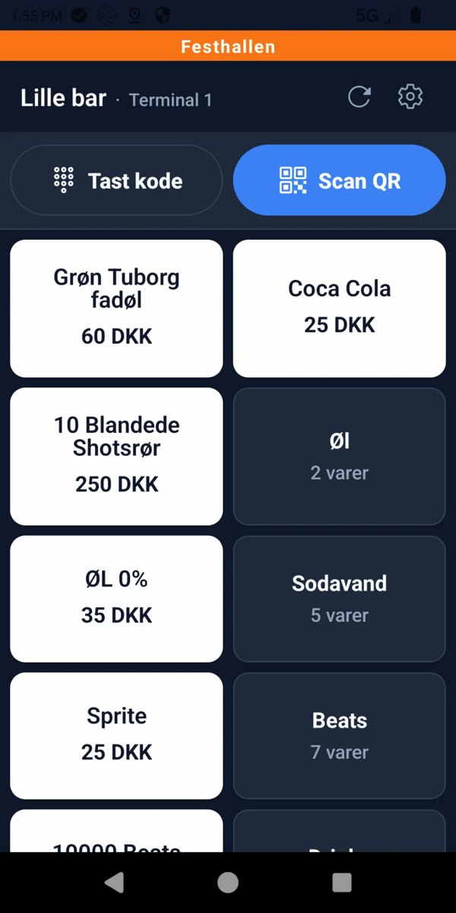
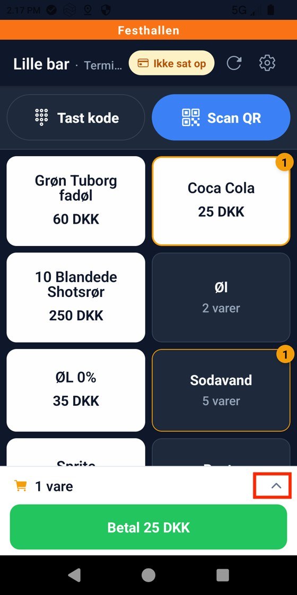
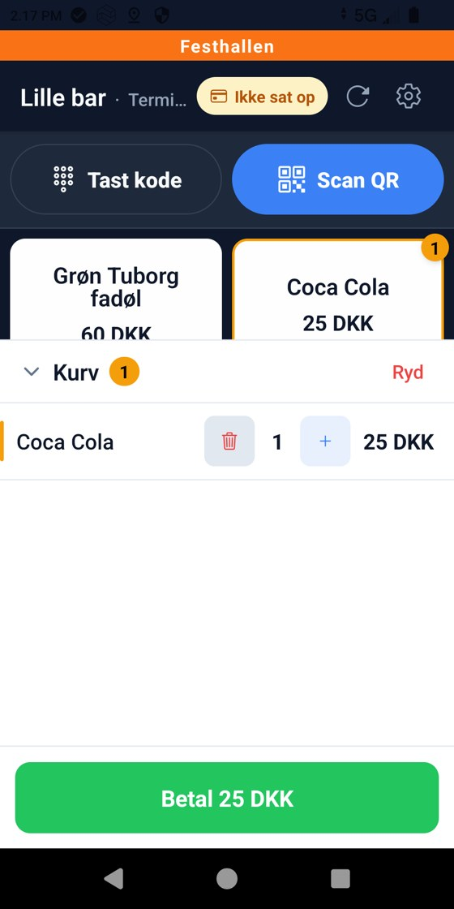
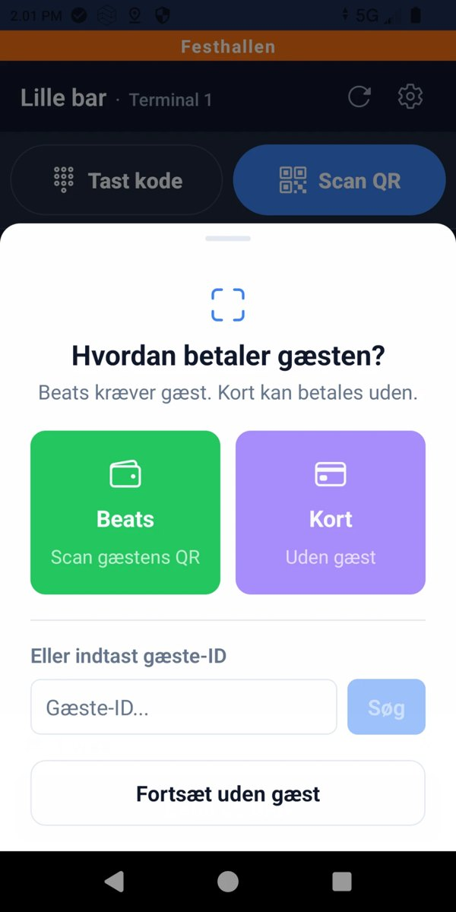
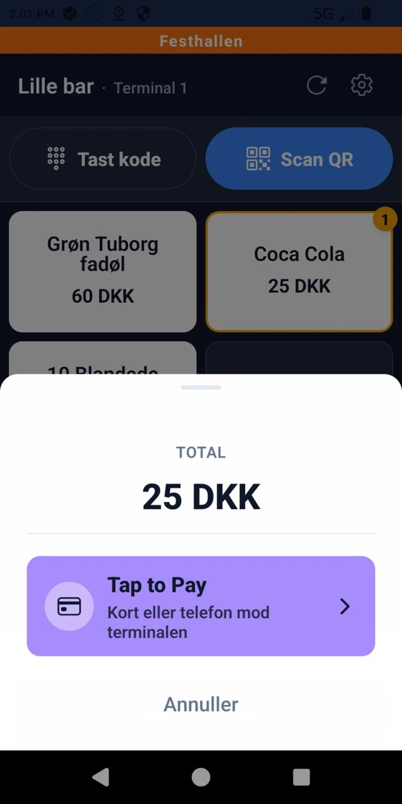
Tryk på produkterne for at tilføje dem til bestillingen. Du kan rette bestillingen med pilen op (^), før du trykker på Betal. Gæsterne skal helst betale med Beats fra deres app. Når skærmen viser "Betaling gennemført!", trykker du på Næste kunde.
Beats fra appen
- Tilføj produkter til bestillingen.
- Tryk på den grønne knap Betal.
- Tryk på Beats, og scan QR-koden i gæstens app.
- Skærmen viser totalen og gæstens saldo. Tryk på Beats. Betalingen gennemføres.
Beats fra armbåndet
- Tilføj produkter til bestillingen.
- Hold gæstens armbånd mod terminalen. Du skal ikke trykke på noget. Gæstens navn vises øverst på skærmen.
- Tryk på den grønne knap Betal.
- Tryk på Beats. Betalingen gennemføres.
Betalingskort, gæst uden appen
Gæster uden appen kan bestille og betale med betalingskort direkte på terminalen.
- Tilføj produkter til bestillingen.
- Tryk på den grønne knap Betal.
- Tryk på Fortsæt uden gæst.
- Tryk på Tap to Pay.
- Gæsten holder sit kort eller sin telefon mod terminalen. Betalingen gennemføres.
BarenOptankning af Beats
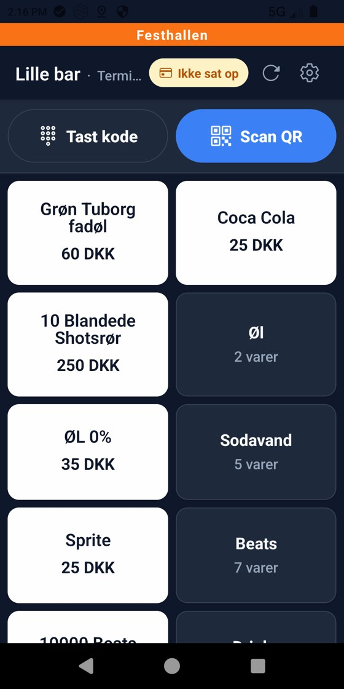
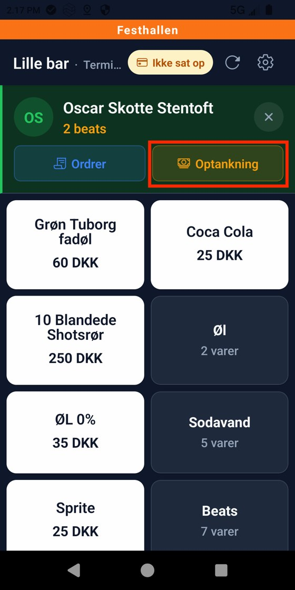
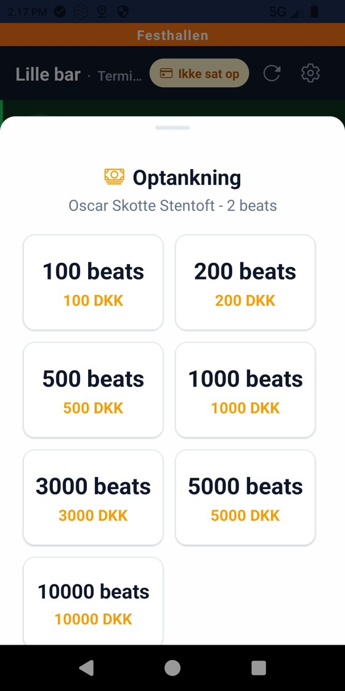
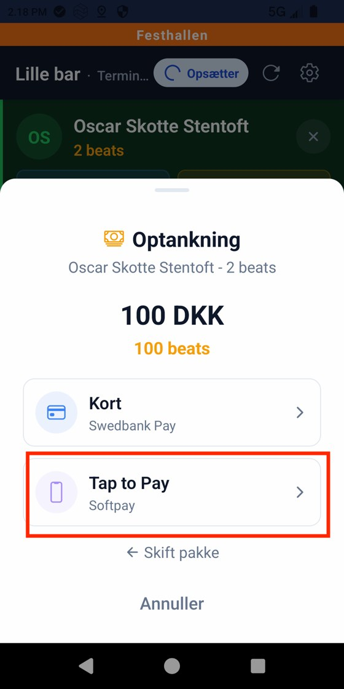
- Find gæsten øverst på salgsskærmen: tryk på Scan QR, og scan gæstens QR-kode, eller hold gæstens armbånd mod terminalen.
- Tjek sammen med gæsten, at den rigtige konto vises.
- Tryk på den gule knap Optankning under gæstens navn.
- Vælg beløb, og tryk på Tap to Pay.
- Gæsten holder sit kort eller sin telefon mod terminalen. Skærmen viser "Optankning gennemført".
- Tjek, at det rigtige beløb er lagt til Beats-saldoen under gæstens navn.
BarenGæsten vil have pengene tilbage
Refundering udføres kun af en leder. Bed gæsten om at vente, og kontakt lederen.
GarderobenModtag og udlever tøj
Modtag tøj
- Tryk på T-shirten øverst på skærmen. Garderoben åbner på Aflever.
- Scan gæstens QR-kode med scannerknappen på siden af terminalen, eller tryk på Kamera. Har gæsten et armbånd, holder du det mod terminalen.
- Scan bøjlens QR-kode på samme måde.
- Skærmen viser "Bøjle registreret" og bøjlens nummer. Terminalen går selv videre, eller du kan trykke på Næste.
- Tjek, at det rigtige bøjlenummer vises i gæstens app.
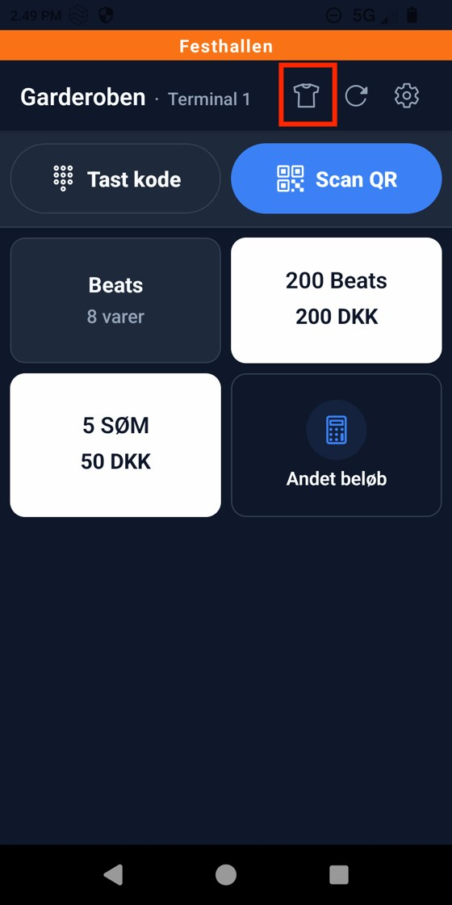
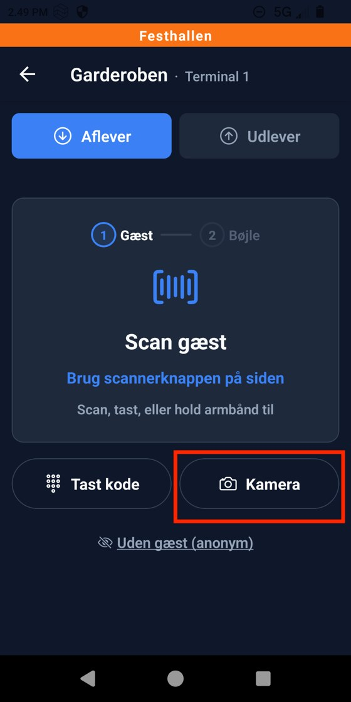
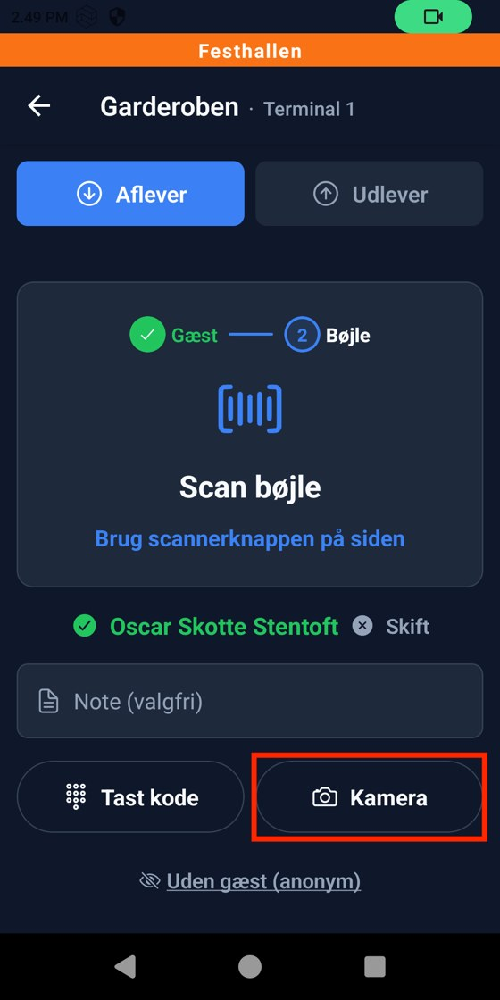
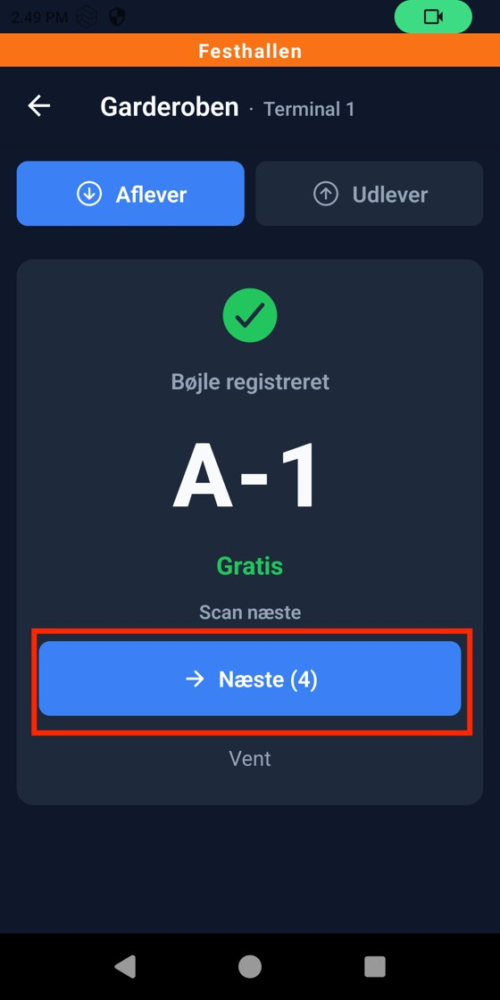
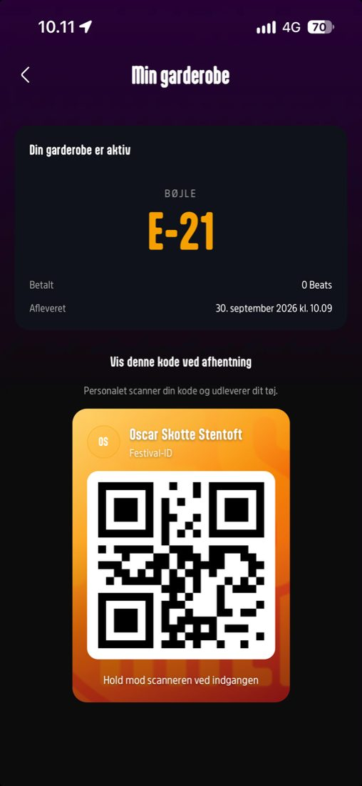
Gæsten har ikke appen
Tryk på Uden gæst (anonym) under Aflever, og scan bøjlen. Når gæsten henter tøjet, scanner du bøjlen under Udlever.
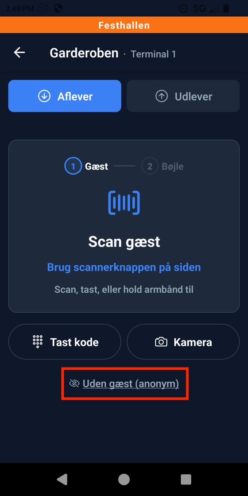
Har gæsten glemt sit nummer, står det i appen under Min garderobe.
Udlever tøj
- Tryk på T-shirten øverst på skærmen, og vælg Udlever.
- Scan gæstens QR-kode eller bøjlen.
- Skærmen viser gæstens navn og bøjlens nummer. Find bøjlen.
- Når tøjet er udleveret, trykker du på Udleveret.
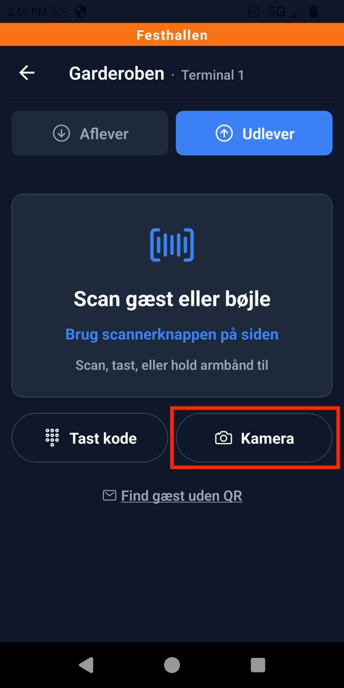
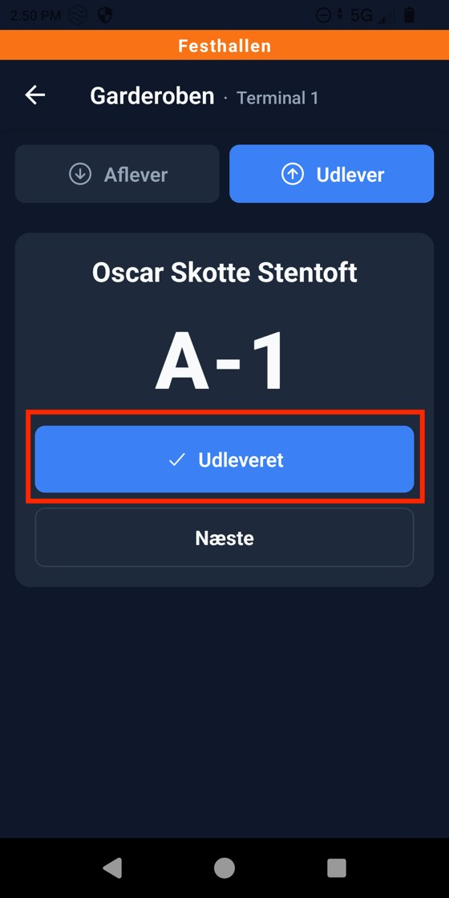
Kan gæstens QR-kode ikke scannes ved udlevering?
- Tryk på Find gæst uden QR under Udlever.
- Skriv gæstens e-mail eller fulde navn, og tryk på Find.
- Vælg gæsten, og tjek gæstens legitimation, før du udleverer tøjet.
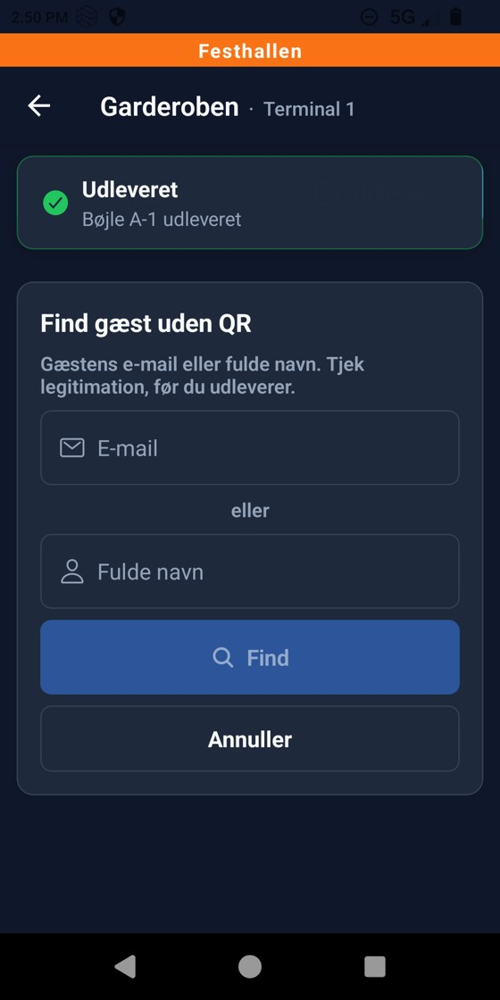
Gæster, der bliver sendt til garderoben
Baren og indgangen sender gæster til garderoben, når de ikke selv kan hjælpe. Kan du heller ikke hjælpe gæsten, kontakter du din leder.
IndgangenScan en gæst
- Tryk på KLAR TIL AT SCANNE på forsiden af RF Scanner.
- Hold kameraet mod gæstens QR-kode. Terminalen læser den selv. Har gæsten et armbånd, holder du armbåndet tæt på terminalen.
- Se på farven på skærmen. Hver farve har sin egen lyd og vibration.
Er du i tvivl, så luk ikke ind.
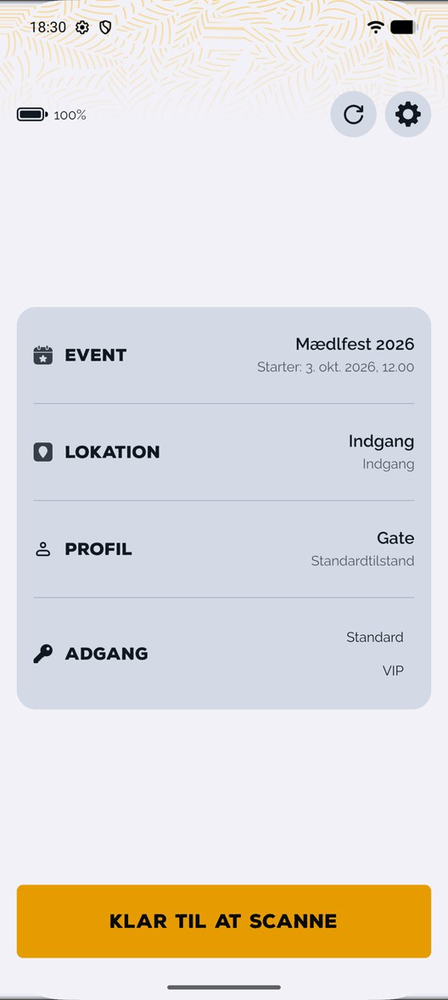
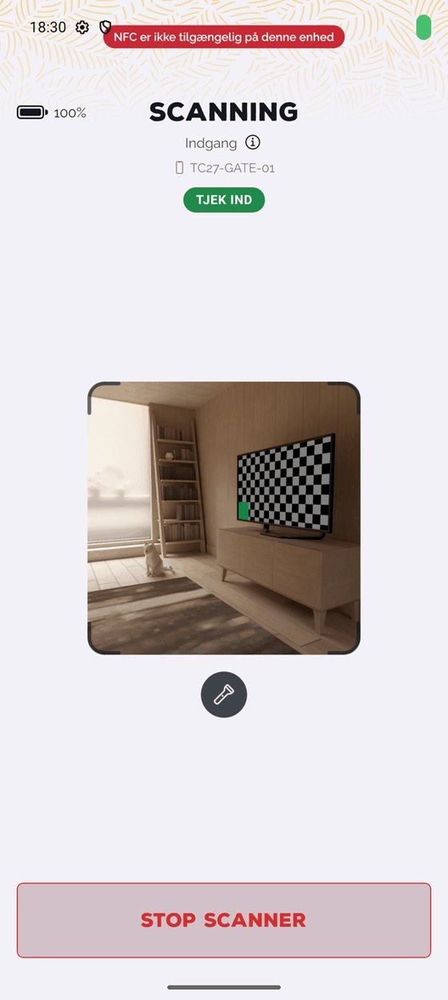
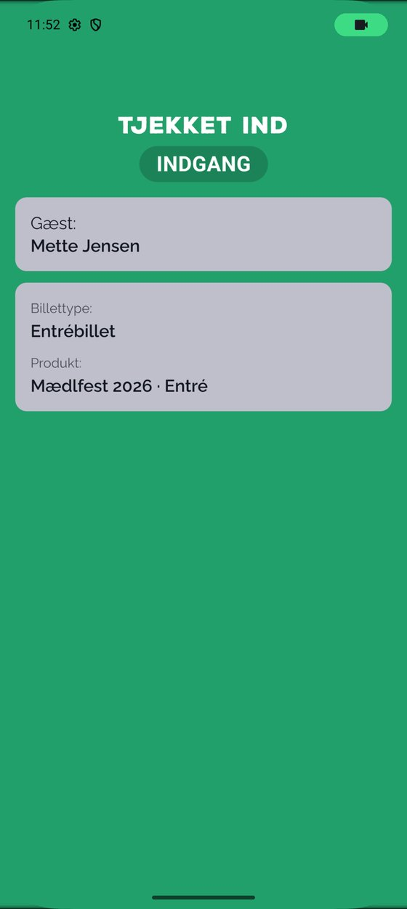
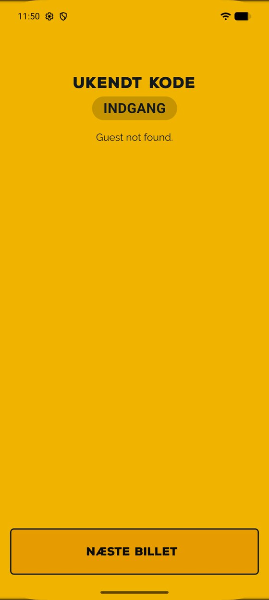
Kan QR-koden ikke læses, så bed gæsten om at skrue op for lysstyrken og holde telefonen stille. Er det mørkt, så tænd lommelygten under kamerafeltet. Er kameraet gået på pause, trykker du på kamerafeltet.
Gæsten har flere billetter
Skærmen viser en liste med "ANTAL BILLETTER". Tjek, at personerne står foran dig. Fravælg dem, der ikke er her, og tryk på TJEK IND.
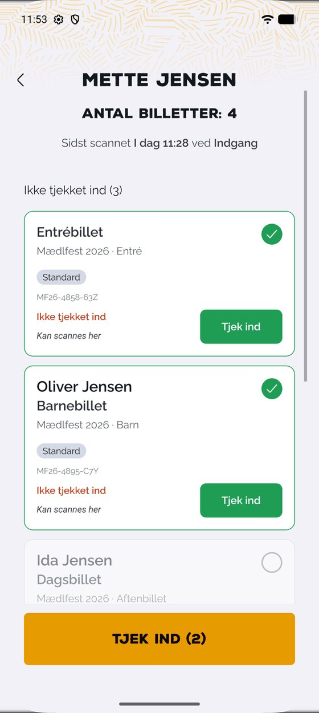
Orange skærm
| Skærmen siger | Gør sådan |
|---|---|
| UKENDT KODE | Bed gæsten om at åbne billetten i appen, og scan igen. Virker det ikke, sender du gæsten til garderoben. |
| SCANNET FOR HURTIGT | Scan én gang til. Står der så ALLEREDE TJEKKET IND, gik den første scanning igennem: luk gæsten ind. |
| INGEN FORBINDELSE eller SCANNING MISLYKKEDES | Intet er registreret. Scan igen. Gå eventuelt et par meter for at få bedre signal. |
| NFC-TAG KUNNE IKKE LÆSES | Hold armbåndet helt stille mod terminalen, eller scan gæstens QR-kode. |
IndgangenRød skærm ved scanning
Rød betyder: luk ikke gæsten ind. Du skal ikke selv vurdere, om gæsten må komme ind, og du skal ikke diskutere det ved indgangen.
- Læs overskriften på den røde skærm, og find den i tabellen.
- Sig til gæsten, at du ikke kan lukke ind her, og at gæsten kan få hjælp ved garderoben.
- Tryk på NÆSTE BILLET, og tag den næste gæst.
| Skærmen siger | Det betyder | Gør sådan |
|---|---|---|
| ALLEREDE TJEKKET IND | Billetten er allerede brugt til at komme ind. Skærmen viser tid og sted. | Send gæsten til garderoben. |
| INGEN BILLET TIL DETTE EVENT | Gæsten har ingen billet til dette arrangement. | Send gæsten til garderoben. |
| BILLET TILBAGEKALDT ELLER ANNULLERET | Gæsten har ingen gyldig billet. | Send gæsten til garderoben. |
| ALLEREDE LUKKET IND PÅ EN ANDEN BILLET | Gæsten har to ens billetter. Denne kopi skal overdrages til den, der skal bruge den. | Send gæsten til garderoben. |
| GUEST BLOCKED | Festhallen har lukket for adgang for gæsten. | Kald lederen med det samme. |
| NOGET GIK GALT | Teknisk fejl. Det er ikke gæstens fejl. | Tryk NÆSTE BILLET, og scan én gang til. |


Hvis noget går galtTerminalen kan ikke bruges
Terminalen er død
- Sæt terminalen i laderen, og vent et par minutter.
- Tænd terminalen med tænd/sluk-knappen i toppen.
- Er den stadig død, så kontakt din leder.
Kun leder Lederen kan tage batteriet ud på bagsiden og sætte det i igen.

Terminalen har mistet internetforbindelsen
Festhallen POS viser "Offline" øverst på skærmen. RF Scanner viser "Ingen internetforbindelse". Tryk på cirklen nederst på skærmen, så kommer du til forsiden. Åbn appen igen derfra. Hjælper det ikke:
- Tryk på cirklen nederst, og vælg Esper-indstillinger.
- Vælg Trådløst internet. Slå Brug Wi-Fi fra og til igen.
- Tjek, at terminalen får forbindelse til Wi-Fi.
- Hjælper det ikke, så slå Mobildata til. Den står lige under Trådløst internet.
- Er forbindelsen stadig ustabil, så kontakt din leder.
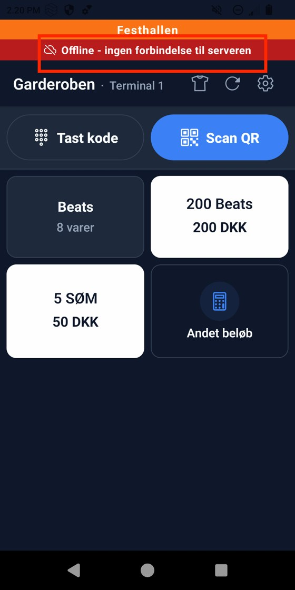
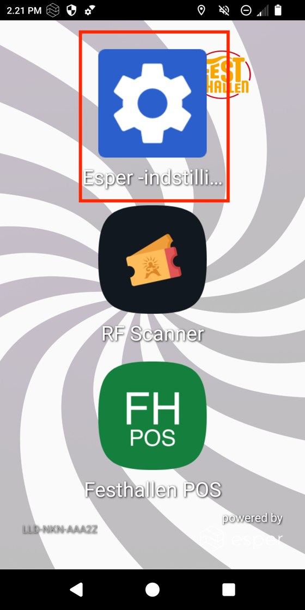
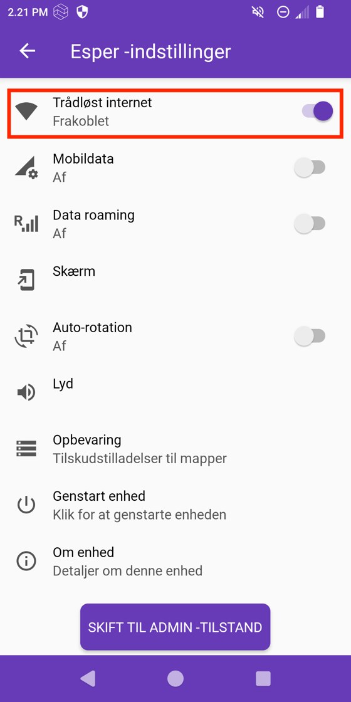
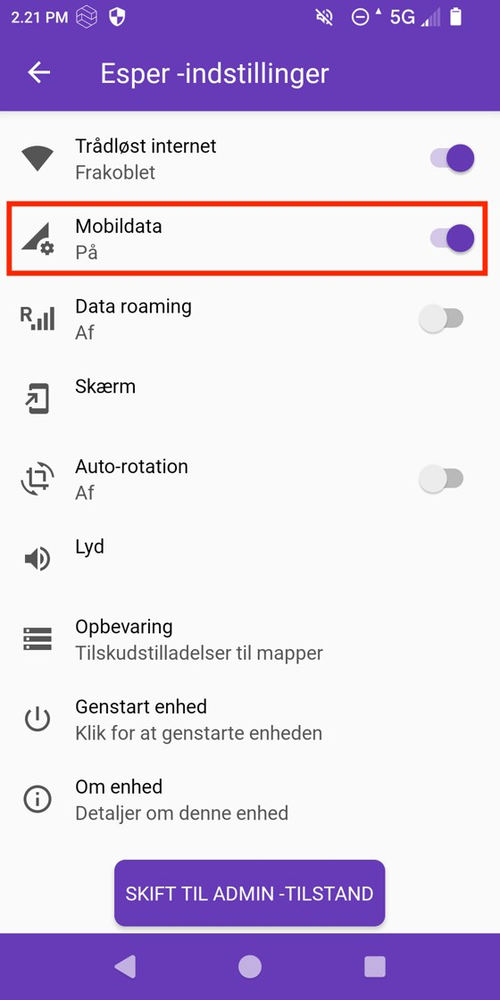
Hvis noget går galtTerminalen virker, men noget driller
"Ukendt gæst"

- Prøv én gang mere.
- Tjek, at gæsten er inde i Festhallen-appen og ikke i Ringsted Festival-appen.
- Kontakt lederen, eller send gæsten til garderoben.
Kortet bliver afvist ved optankning
- Prøv én gang mere.
- Prøv ikke flere gange. Så kan gæsten blive trukket to gange.
- Virker det ikke, skal gæsten tanke op i sin egen app eller bruge et andet kort. Du kan også sende gæsten til garderoben.
Gæsten mangler Beats
- Bed gæsten om at tanke op i sin egen app med kort, Apple Pay, Google Pay eller MobilePay.
- Kan gæsten ikke det, hjælper du med optankning på terminalen. Bagefter betaler gæsten bestillingen med Beats. Du kan også sende gæsten til garderoben.
"Vi mangler at bekræfte betalingen"
- Tryk på Tjek betaling.
- Tag ikke betalingen igen, før terminalen har svaret.
- Bliver betalingen ikke bekræftet, kontakter du lederen.
"Kortterminal ikke klar"
Terminalen kan ikke tage kort lige nu. Lad gæsten betale med Beats, eller kontakt lederen.
"Noget gik galt. Prøv igen."
- Prøv igen, højst tre gange.
- Kontakt derefter lederen, eller send gæsten til garderoben.
AlleNår du er færdig
Aflevér terminalen til din leder, når din vagt slutter. Lad den ikke ligge fremme.
Ved tvivl: stop, og kontakt din leder.